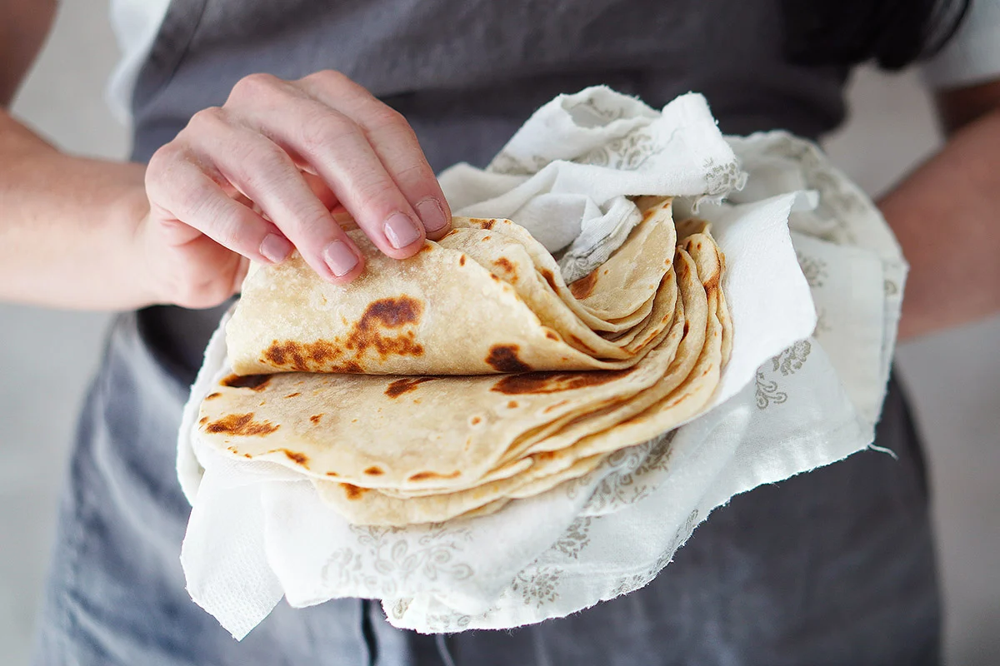

Homemade Tortillas

Description
Fluffy, toasty tortilla goodness. Much better than your fast food tortilla, and well worth the effort. This is Brian Lagerstrom's recipe.
Ingredients
- 310g All Purpose Flour
- 8g Salt
- 5g Sugar
- 50g Oil (canola, light olive)
- 180g Water
Steps
- Add ingredients to bowl and mix together with spoon until well combined into a ball.
- Knead for 60-90 seconds. Add flour if too sticky.
- Divide into four equal pieces
- Roll each piece into a ball. Cover and set aside for about 5 minutes
- Use a rolling pin to evenly turn each ball into tortilla discs.
- Cook in non-stick pan over medium heat for about 60 seconds on first side. Flip and cook for another 60 seconds.